Contents
- MyMainScript
- Your code here
- Assignment 1
- Q2 Main Script
- Code for Q2.a
- Code for Q2.b and 2c.
- Barbara (image 1)
- TEM (image2)
- Canyon (image3)
- Church (image5)
- chestXray (image6)
- statue fg (image7)
- Explanation for Q2.b
- Explanation for Q2.c
- 2d.
- Observations for Q2.d
- Code for Q2.e - Barbara
- Code for Q2.e - TEM
- Code for Q2.e - canyon
- Code for Q2.e - chestXray
MyMainScript
tic;
Your code here
Assignment 1
CS 663: Digital Image Processing, IIT Bombay (Autumn 2020) Aman Kansal, Ansh Khurana, Kushagra Juneja
clc; clear all; close all; warning('off', 'all');
Q2 Main Script
Individual functionalites have been implemented in 'getCDFTransform', 'myCLAHE', 'myForegroundMask', 'myHM', 'myHM' and 'myLinearContrastStretching' Note that CLAHE it takes some time to run for each example. Given the nature of the algorithm, this is within the expcted time range.
Code for Q2.a
Statue image
figure; im2 = imread("../data/statue.png"); title("Original image"); hold on; imshow(im2); figure; [mask, maskedImage] = myForegroundMask(im2); title("Mask"); hold on; imshow(mask); figure; title("Masked image"); hold on; imshow(maskedImage); toc;
Elapsed time is 2.331012 seconds.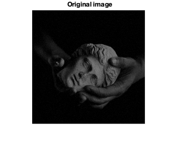

Code for Q2.b and 2c.
Showing Original, Linear Contrast Stretched and HE images together
% figure; % im2 = imread("../data/barbara.png"); % title("Original image"); % hold on; % imshow(im2); % % % Linear Contrast Stretching % figure; % contrastBarbara = uint8(myLinearContrastStretching(im2)); % title("Linear Contrast Stretching"); % hold on; % imshow(contrastBarbara); % toc; image1 = imread('../data/barbara.png'); image2 = imread('../data/TEM.png'); image3 = imread('../data/canyon.png'); image5 = imread('../data/church.png'); image6 = imread('../data/chestXray.png'); image7 = imread('../data/statue.png'); [image7_fg_mask, image7_fg] = myForegroundMask(image7);
Barbara (image 1)
figure; he_image1 = myHE(image1); ls_image1 = myLinearContrastStretching(image1); title("barbara.png - original"); hold on; imshow(image1); figure; title("barbara.png - histogram equalized"); hold on; imshow(he_image1); figure; title("barbara.png - linear contrast stretched"); hold on; imshow(ls_image1);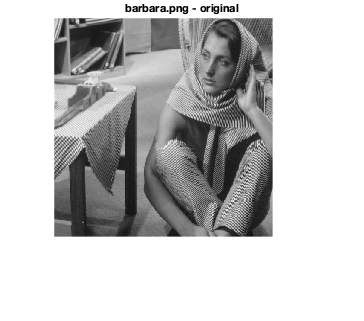 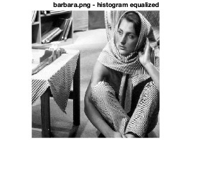 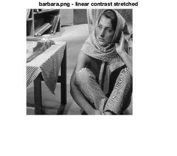
TEM (image2)
figure; he_image2 = myHE(image2); ls_image2 = myLinearContrastStretching(image2); title("TEM.png - original"); hold on; imshow(image2); figure; title("TEM.png - histogram equalized"); hold on; imshow(he_image2); figure; title("TEM.png - linear contrast stretched"); hold on; imshow(ls_image2);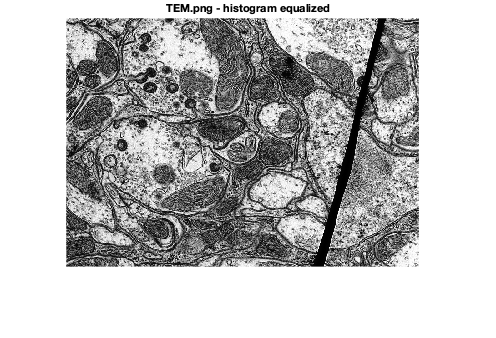 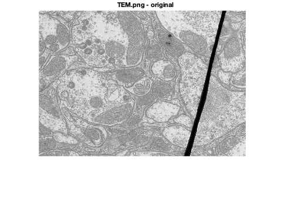 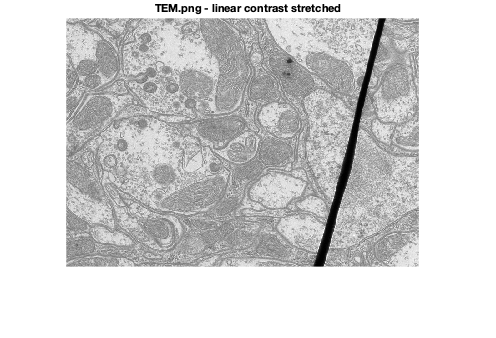
Canyon (image3)
figure; he_image_3 = zeros(size(image3)); ls_image3 = myLinearContrastStretching(image3); he_image3(:,:,1) = myHE(image3(:,:,1)); he_image3(:,:,2) = myHE(image3(:,:,2)); he_image3(:,:,3) = myHE(image3(:,:,3)); title("canyon.png - original"); hold on; imshow(image3); figure; title("canyon.png - histogram equalized"); hold on; imshow(he_image3); figure; title("canyon.png - linear contrast stretched"); hold on; imshow(ls_image3);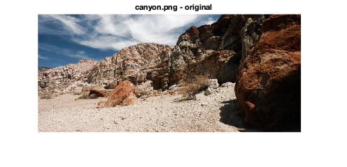 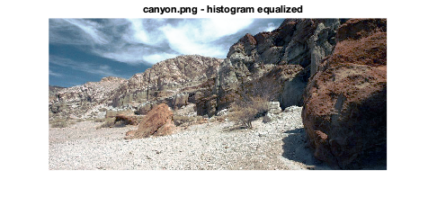 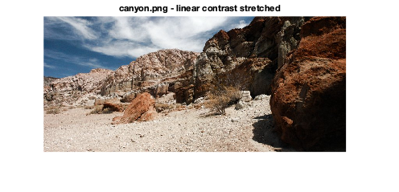
Church (image5)
figure; hold on; he_image_5 = zeros(size(image5)); he_image5(:,:,1) = myHE(image5(:,:,1)); he_image5(:,:,2) = myHE(image5(:,:,2)); he_image5(:,:,3) = myHE(image5(:,:,3)); ls_image5 = myLinearContrastStretching(image5); title("church.png - original"); hold on; imshow(image5); figure; title("church.png - histogram equalized"); hold on; imshow(he_image5); figure; title("church.png - linear contrast stretched"); hold on; imshow(ls_image5);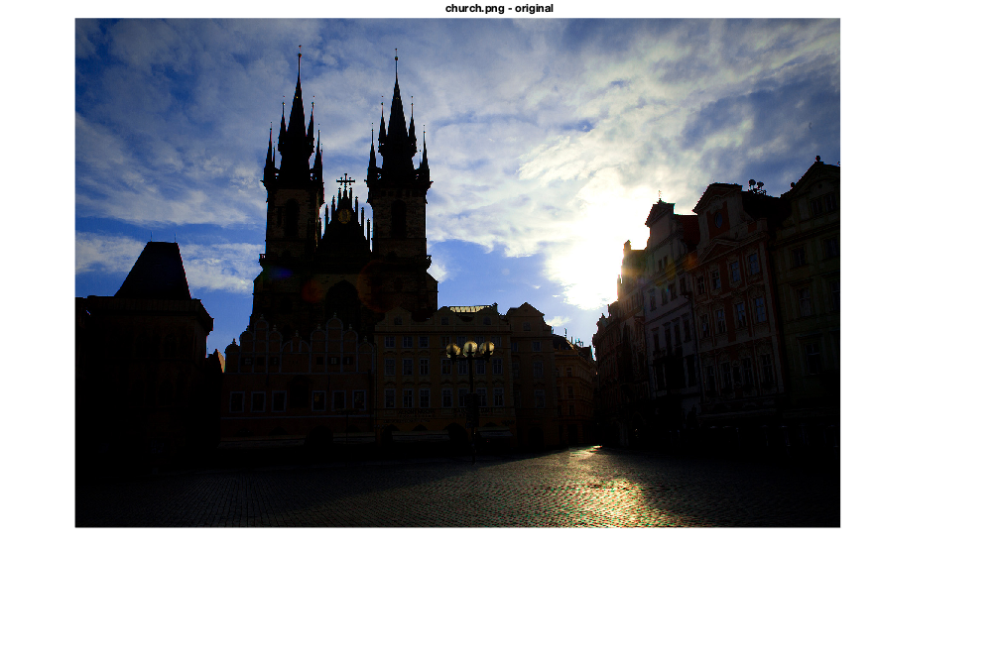 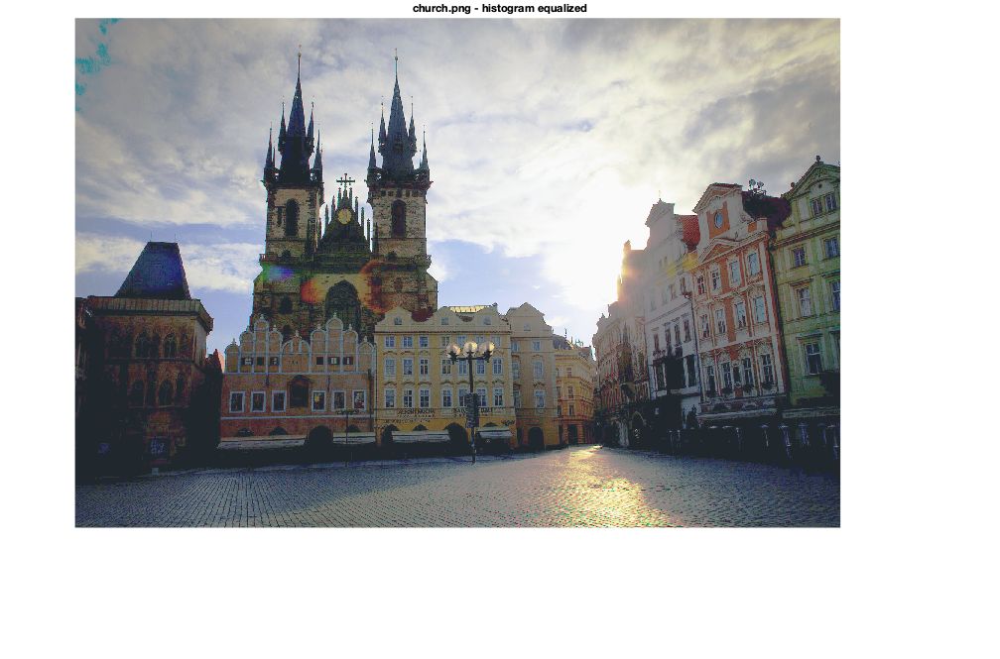
chestXray (image6)
figure; he_image6 = myHE(image6); ls_image6 = myLinearContrastStretching(image6); title("chestXray - original"); hold on; imshow(image6); figure; title("chestXray - histogram equalized"); hold on; imshow(he_image6); figure; title("chestXray - linear contrast stretched"); hold on; imshow(ls_image6);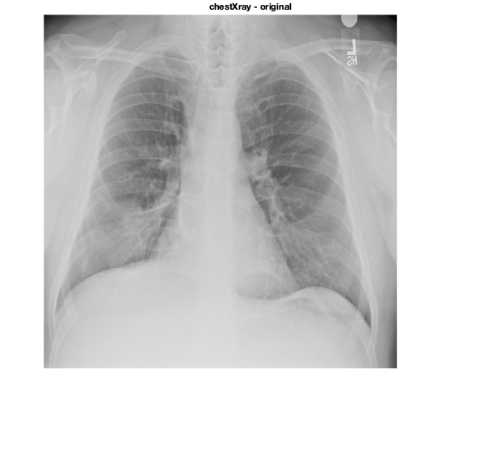 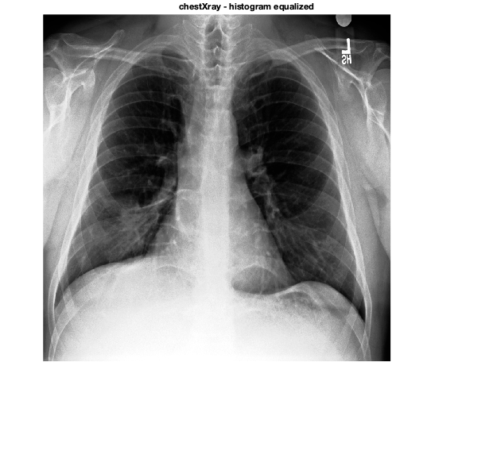 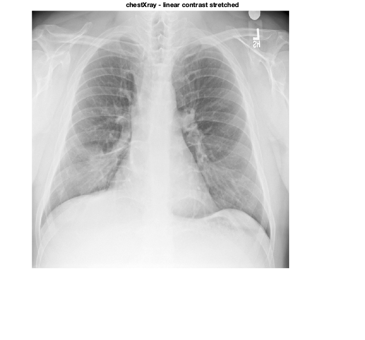
statue fg (image7)
figure; he_image7 = myHE(image7_fg); ls_image7 = myLinearContrastStretching(image7_fg); title("statue.png (foreground) - original"); hold on; imshow(image7_fg); figure; title("statue.png (foreground) - histogram equalized"); hold on; imshow(he_image7); figure; title("statue.png (foreground) - linear contrast stretched"); hold on; imshow(ls_image7); toc;
Elapsed time is 11.394698 seconds.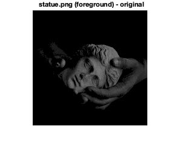 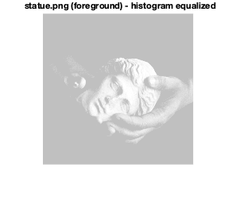 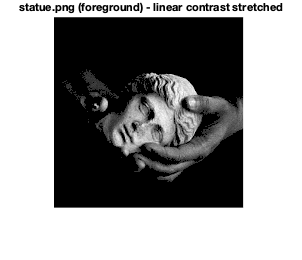
Explanation for Q2.b
Linear Contrast stretching is not effective on image (5) i.e. the church image. This is because the range of intensities in the original image is almost same as the full range of possible intensities i.e. 0 to 255. In other words, there are both very dark and very light pixels in the image. Hence, linear contrast stretching would not be able to change the effective range of intensities of the pixels, hence it would not be of much use in this image.
Explanation for Q2.c
Histogram equalization does a good job on image (5) ie. church image, hence I would prefer it over linear contrast stretching. This is because the image has a peak in the number of pixels having very low intensities( i.e. black) Linear Contrast Stretching is not able to cause much contrast in these pixels. However, histogram equalization works quite well to bring contrast in this part of the image. This is because in histogram equalization, the stretch depends on the number of pixels in each bin (or cdf equivalently) unlike linear contrast stretching.
2d.
input_image = imread('../data/retina.png'); reference_image = imread('../data/retinaRef.png'); % Original image displayImage(input_image, 'original image'); % Reference image displayImage(reference_image, 'reference image'); % Histogram equalized image equalized_image = zeros(size(input_image)); equalized_image(:,:,1) = myHE(input_image(:,:,1)); equalized_image(:,:,2) = myHE(input_image(:,:,2)); equalized_image(:,:,3) = myHE(input_image(:,:,3)); displayImage(equalized_image, 'histogram equalized image'); % Histogram matched image matched_img = myHM(input_image, reference_image); displayImage(matched_img, 'histogram matched image'); toc;
Elapsed time is 12.737178 seconds.
 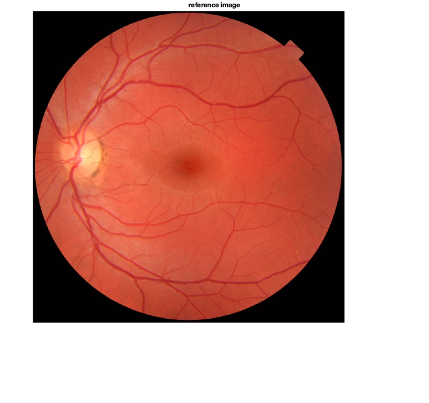 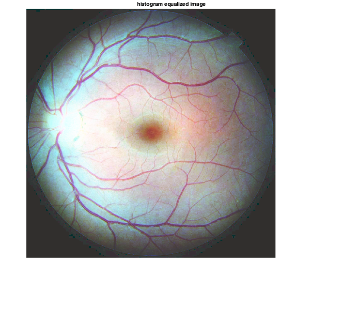 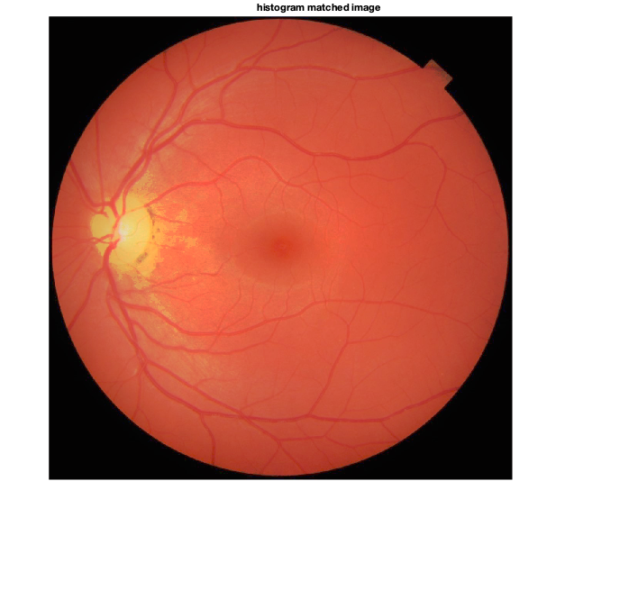
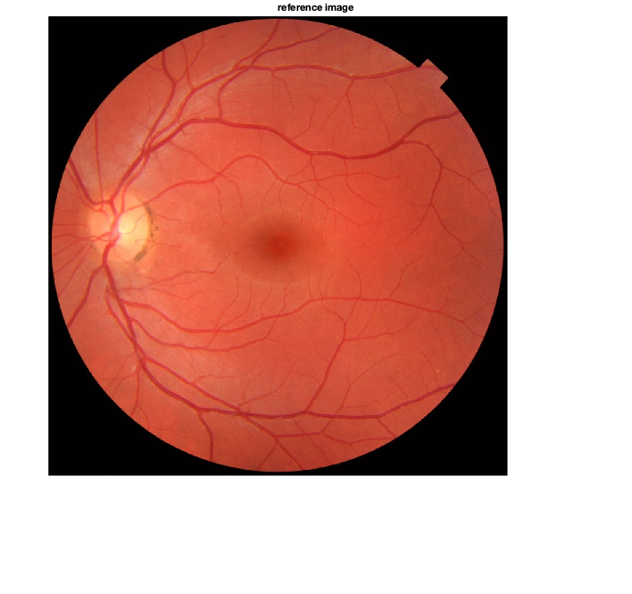 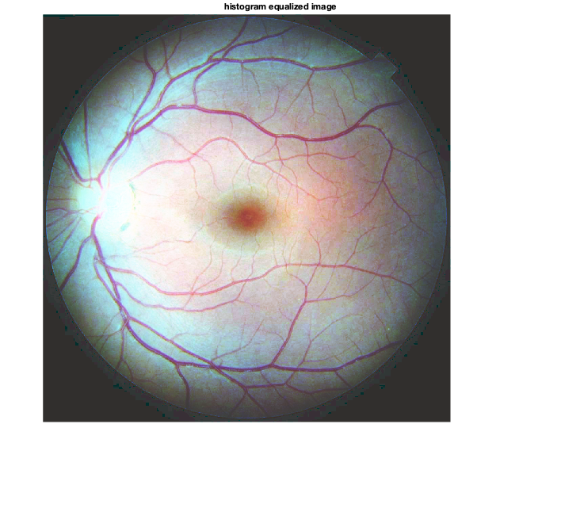 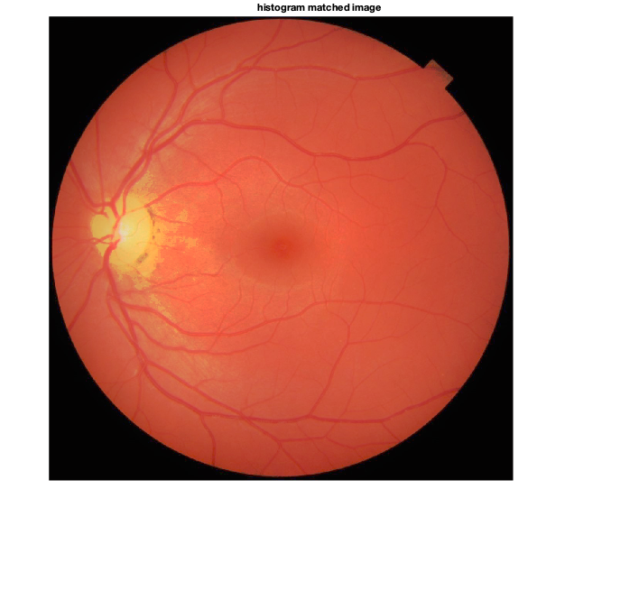 Observations for Q2.d
The histogram equalized image appears very different from our expectation of an image of retina. This is because the images of retina would have a specific distribution of RGB intensities and histogram equalization converts each of them into a flat distribution. Hence, this causes issues like pink colour of veins etc. The results of histogram matched image are much better. The increase in contrast from the original image is apparent as well as there are no absurd artifacts like pink veins unlike histogram equalization. This is because in histogram matching we are already providing the expected distribution of the RGB intensities in a retina image and the algorithm is trying to match that hence providing much better results.
Code for Q2.e - Barbara
image1 = imread('../data/barbara.png'); image2 = imread('../data/TEM.png'); image3 = imread('../data/canyon.png'); image6 = imread('../data/chestXray.png'); clahe_window = 50; small_clahe_window = 10; large_clahe_window = 150; clahe_threshold = 0.014; small_clahe_threshold = 0.007; %CLAHE Analysis for barbara.png figure; hold on; clahe_image1 = myCLAHE(image1,clahe_window,clahe_threshold); title("barbara.png - original"); hold on; imshow(image1); toc; figure; title("barbara.png - CLAHE"); hold on; imshow(clahe_image1); fig=gcf; save("../images/barbara_clahe.mat", 'fig', '-mat'); figure; hold on; small_clahe_image1 = myCLAHE(image1,small_clahe_window,clahe_threshold); title("barbara.png - CLAHE small window"); hold on; imshow(small_clahe_image1); fig=gcf; save("../images/barbara_clahe_small_w.mat", 'fig', '-mat'); figure; hold on; large_clahe_image1 = myCLAHE(image1,large_clahe_window,clahe_threshold); title("barbara.png - CLAHE large window"); hold on; imshow(large_clahe_image1); fig=gcf; save("../images/barbara_clahe_large_w.mat", 'fig', '-mat'); figure; hold on; clahe_image1_small_h = myCLAHE(image1,clahe_window,small_clahe_threshold); title("barbara.png - CLAHE small threshold"); hold on; imshow(clahe_image1_small_h); fig=gcf; save("../images/barbara_clahe_small_t.mat", 'fig', '-mat');
Elapsed time is 26.539454 seconds.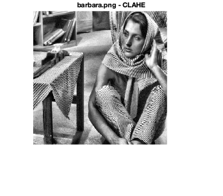 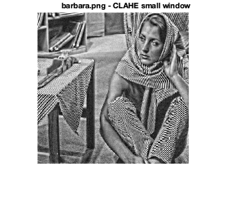 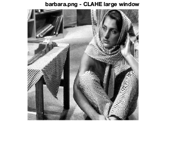
Code for Q2.e - TEM
%CLAHE Analysis for TEM.png figure; hold on; clahe_image2 = myCLAHE(image2,clahe_window,clahe_threshold); title("TEM.png - original"); hold on; imshow(image2); figure; title("TEM.png - CLAHE"); hold on; imshow(clahe_image2); figure; hold on; small_clahe_image2 = myCLAHE(image2,small_clahe_window,clahe_threshold); title("TEM.png - CLAHE small window"); hold on; imshow(small_clahe_image2); fig=gcf; save("../images/tem_clahe_small_w.mat", 'fig', '-mat'); figure; hold on; large_clahe_image2 = myCLAHE(image2,large_clahe_window,clahe_threshold); title("TEM.png - CLAHE large window"); hold on; imshow(large_clahe_image2); fig=gcf; save("../images/tem_clahe_large_w.mat", 'fig', '-mat'); figure; hold on; clahe_image2_small_h = myCLAHE(image2,clahe_window,small_clahe_threshold); title("TEM.png - CLAHE small threshold"); hold on; imshow(clahe_image2_small_h); fig=gcf; save("../images/tem_clahe_small_t.mat", 'fig', '-mat');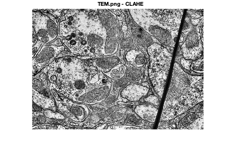 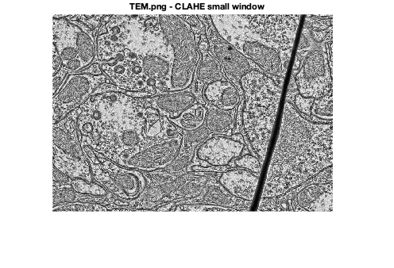 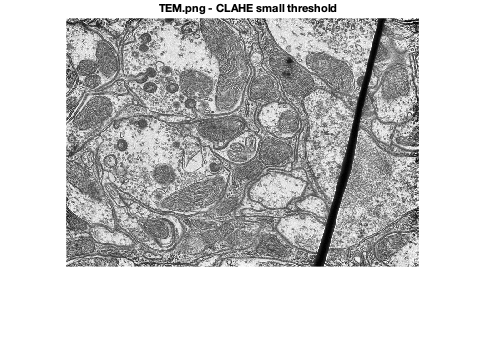 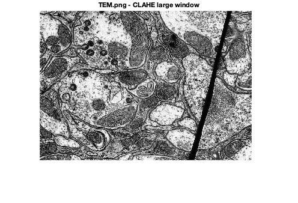
Code for Q2.e - canyon
%CLAHE Analysis for canyon.png figure; hold on; clahe_image = zeros(size(image3)); for i = 1:3 clahe_image3(:,:,i) = myCLAHE(image3(:,:,i),clahe_window,clahe_threshold); end title("canyon.png - original"); hold on; imshow(image3); figure; title("canyon.png - CLAHE"); hold on; imshow(clahe_image3); fig=gcf; save("../images/canyon_clahe.mat", 'fig', '-mat'); figure; hold on; for i = 1:3 small_clahe_image3(:,:,i) = myCLAHE(image3(:,:,i),small_clahe_window,clahe_threshold); end title("canyon.png - CLAHE small window"); hold on; imshow(small_clahe_image3); fig=gcf; save("../images/canyon_clahe_small_w.mat", 'fig', '-mat'); figure; hold on; for i = 1:3 large_clahe_image3(:,:,i) = myCLAHE(image3(:,:,i),large_clahe_window,clahe_threshold); end title("canyon.png - CLAHE large window"); hold on; imshow(large_clahe_image3); fig=gcf; save("../images/canyon_clahe_large_w.mat", 'fig', '-mat'); figure; hold on; for i = 1:3 clahe_image3_small_h(:,:,i) = myCLAHE(image3(:,:,i),clahe_window,small_clahe_threshold); end title("canyon.png - CLAHE small threshold"); hold on; imshow(clahe_image3_small_h); fig=gcf; save("../images/canyon_clahe_small_t.mat", 'fig', '-mat');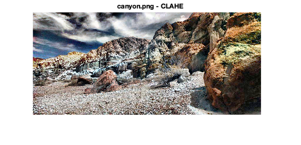 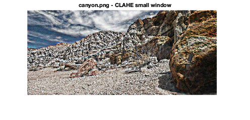 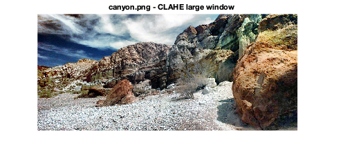 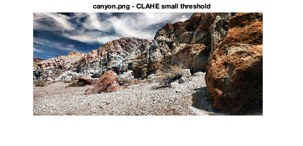 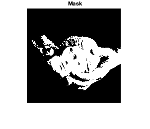
Code for Q2.e - chestXray
%CLAHE Analysis for chestXray.png figure; hold on; clahe_image6 = myCLAHE(image6,clahe_window,clahe_threshold); title("chestXray.png - original"); hold on; imshow(image6); figure; title("chestXray.png - CLAHE"); hold on; imshow(clahe_image6); fig=gcf; save("../images/chest_clahe.mat", 'fig', '-mat'); figure; hold on; small_clahe_image6 = myCLAHE(image6,small_clahe_window,clahe_threshold); title("chestXray.png - CLAHE small window"); hold on; imshow(small_clahe_image6); fig=gcf; save("../images/chest_clahe_small_w.mat", 'fig', '-mat'); figure; hold on; large_clahe_image6 = myCLAHE(image6,large_clahe_window,clahe_threshold); title("chestXray.png - CLAHE large window"); hold on; imshow(large_clahe_image6); fig=gcf; save("../images/chest_clahe_large_w.mat", 'fig', '-mat'); figure; hold on; clahe_image6_small_h = myCLAHE(image6,clahe_window,small_clahe_threshold); title("chestXray.png - CLAHE small threshold"); hold on; imshow(clahe_image6_small_h); fig=gcf; save("../images/chest_clahe_small_t.mat", 'fig', '-mat'); toc;
Elapsed time is 587.534456 seconds.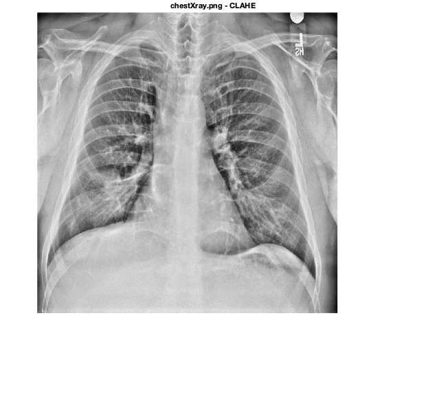 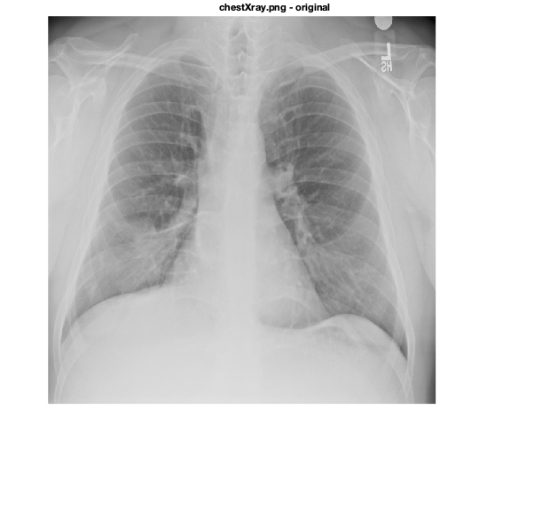 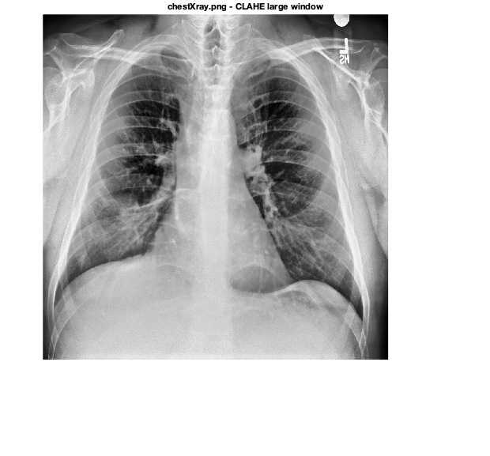 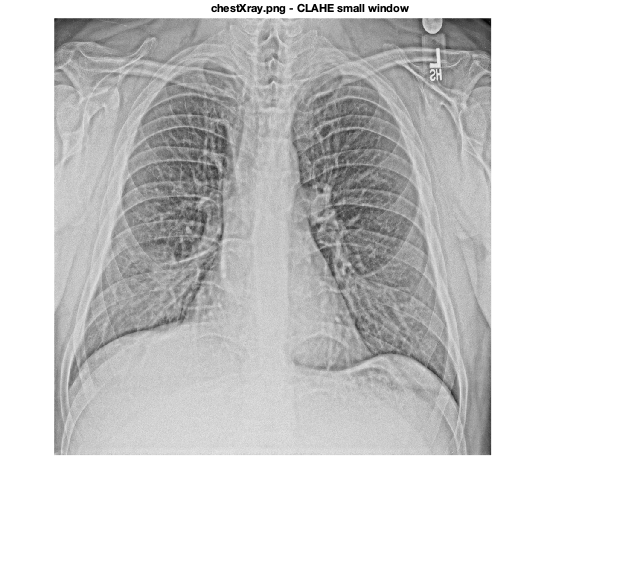 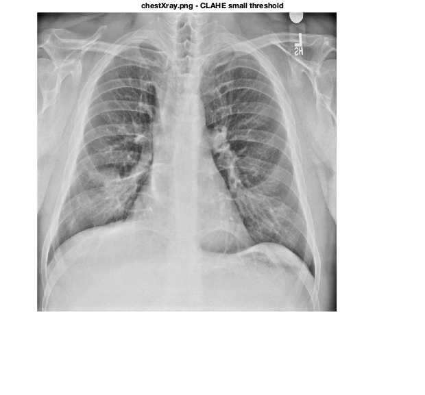